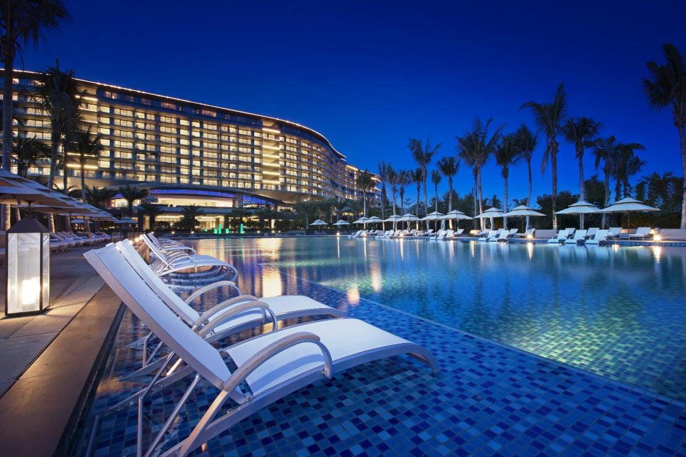

公园国际大酒店是一家商务、会议型豪华酒店，是某市首家五星级酒店。酒店座落在苏南工业重镇新桥镇海澜工业园内，
北枕长江，南靠太湖，毗邻张家港市中心，宁太（沿江）高速横亘其侧，交通极其便利。酒店按欧式风格设计装修，
环境优美，格调高雅。客房舒适、豪华，餐饮风味独特，各类康乐休闲设施一应俱全，设施先进的商务中心随时为您
提供周到、快捷的服务。而气势恢宏、功能齐全的国际会展中心更将使您的商务活动取得意想不到的成功！当暮色降
临时，海澜工业园内华光闪烁，幢幢欧式建筑风姿绰约，柔和的光晕洋溢在铜栏杆、古廊柱、大理石上，仿佛一首幽
远的歌从上世纪初一直吟唱到今，让您沉醉在一派浓郁的欧陆风情之中……